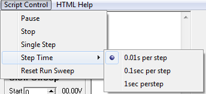

Pause Checking
Pause stops the running of the script program until either
Pause is un-checked or the
Run Script button is clicked.
Stop Stops execution of the script program and resets the program pointer to the first line of text.
Single Step Checking
Single Step will pause execution of the script program after each line is executed. Click
Run Script to step to the next line.
Step Time This sets the timer interval for processing each line of script code. Check the desired step time using the submenu items.
Reset Run Sweep When the program does not find a serial interface, it is possible the
Run Sweep button may remain disabled. Click
Reset Run Sweep to correct this condition after a new serial port is manually assigned.
Main